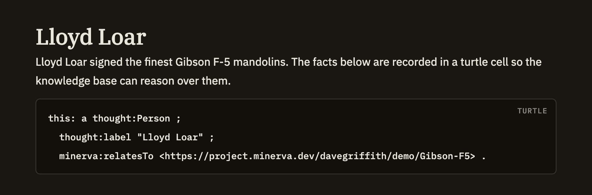

Turtle / RDF
As you write, Minerva quietly builds a knowledge base from your notes — pulling in titles, tags, links, properties, and table data on its own. Sometimes, though, you want to state a fact about a note more precisely than Minerva could guess. A turtle cell lets you write those facts by hand, right inside the note, and they join everything else Minerva already knows.
Writing a turtle cell
Start a cell and label it turtle. Whatever you put inside is read as facts about your note rather than shown as a plain code sample. Each fact is a short statement: a subject, a relationship, and a value. Use this: as the subject when the statement is about the current note — the most common case.
Here's a realistic example: marking a note as a glossary term and connecting it to a broader idea.
```turtle
this: a thought:Term ;
thought:hasStatus thought:established ;
minerva:relatesTo <https://minerva.dev/ontology#Provenance> .
```When you save, these three statements about the note join the titles, tags, and links Minerva gathered from the rest of it. Edit the cell and save again, and your facts update to match — just like any other change to the note.

Shorthands you can use
You don't have to set anything up first. A handful of common shorthands — including thought:, dc:, and rdf: — are always ready, along with this: for the note itself. Just write thought:Term or dc:title and it works. If you'd rather define your own shorthand to point somewhere else, declare it in the cell and yours takes precedence.